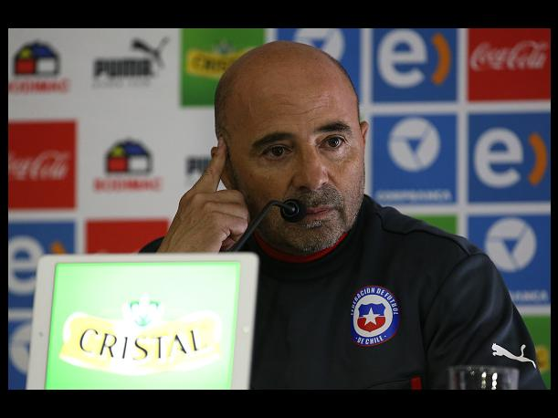

Me ilusiona esta selección chilena": Jorge Sampaoli
23/Junio/2015
El técnico de la selección de Chile, Jorge Sampaoli, aseguró hoy que le ilusiona el juego de su equipo de cara al choque de cuartos de final contra Uruguay en la Copa América.
"Me ilusionan mucho las ganas de jugar que tiene Chile. Bajo ese argumento pienso que vamos a tener posibilidades de pasar a semifinales", declaró Sampaoli a la prensa un día antes del partido.
Sobre la presión que tiene Chile para quedarse con el título, el técnico argentino comentó que "la presión hoy se transforma en una ilusión cada vez mayor. Estamos esperando el partido, quiero que empiece ya, me gusta como jugamos, me representa".
En relación con la mentalidad que tiene el equipo local para enfrentar esta fase de la cita continental, enfatizó que hay muchos "compromisos y auto-compromisos que nos impulsan a la ilusión de tener la chance de llegar a semis y seguir avanzando".
Agregó que "al momento del juego (los seleccionados) van a mostrar la grandeza del grupo frente a un rival que nunca da por perdida una llave hasta el final".
Respecto al funcionamiento de Chile, Sampaoli señaló: "tenemos que pensar más en el arco rival que en el propio, hemos pensado mucho cómo jugar cada pelota y cómo hacerlo de la mejor manera para que podamos pasar".
Añadió que "Chile no se puede cuidar del partido, hay que salir a proponerlo, nosotros sabemos qué partido nos va a tocar jugar".
En cuanto a las claves del juego charrúa, el estratega afirmó que "nos preocupan las pelotas paradas porque son especialistas, tienen grandes cabeceadores y pateadores. Hemos trabajado para contrarrestar eso".
Sampaoli se refirió al astro uruguayo Luis Suárez y manifestó que "la ausencia de él es muy difícil de remplazar; ellos se han acostumbrado jugar a la capacidad de Luis. Uruguay siente la ausencia de Luis, pero ellos siempre tienen la misma mística".
Este martes los seleccionados chilenos asistirán en el Complejo Deportivo Juan Pinto Durán a una exhibición privada de la película "Los 33", sobre los mineros atrapados en 2010 y dirigida por la mexicana Patricia Riggen, como forma de motivación para los jugadores.